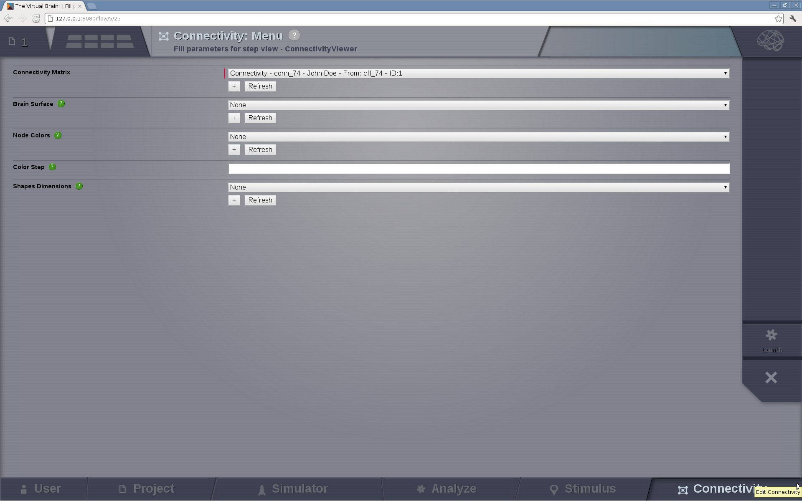
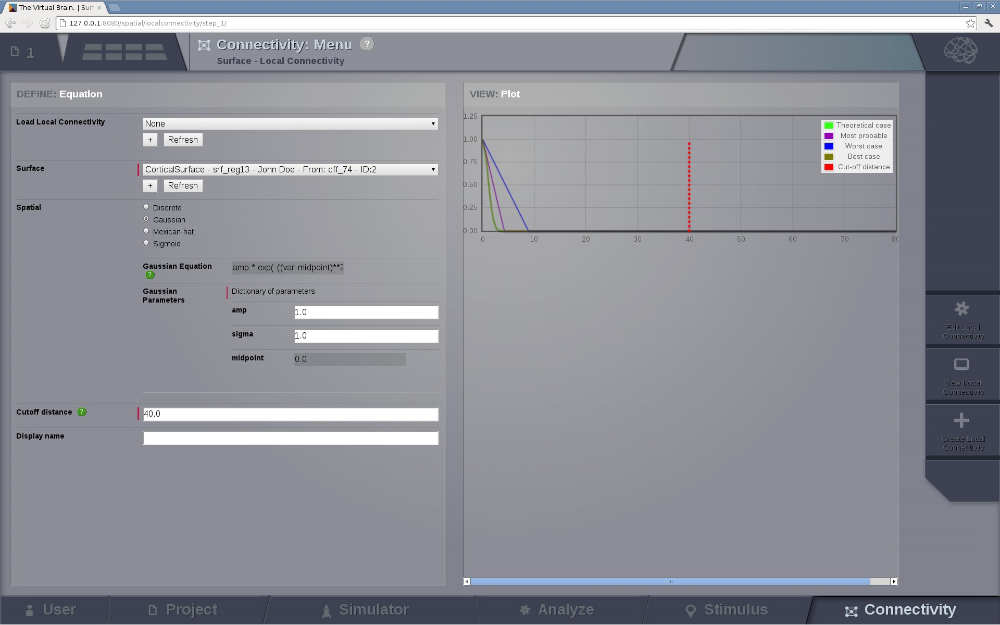
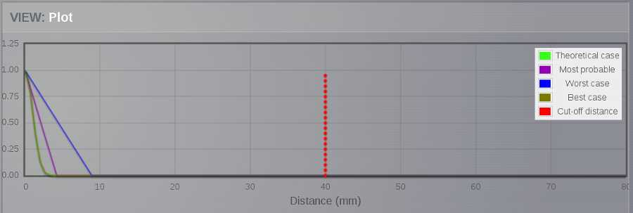

In this area you can edit both types of TVB connectivity objects:
- long-range connectivity and,
- local connectivity.

Preview for Connectivity Area
Large Scale Connectivity configuration page
From this page you can access:
an interactive display tool on the Control right column and
several Long Range Connectivity visualizations on the left View column.
- 3D Views
- Edges
- Nodes
- 2D Projections
- Left
- Right
- Top
- a MPLH5 matrix plot
Preview for the Matrix Editor
From the this 2D display allows you to:
- easily edit the connectivity (tract lengths) matrix, and
- create a modified version of your connectivity matrix
- select a small subset of nodes - perform basic algebraic operations on that group
- save all changes to use the new Connectivity object in a simulation.
Hint
In the Matrix Editor only one quadrant is displayed at a time. You can select which quadrant is shown by accessing the quadrant selector button in the upper left corner of the matrix display.
quadrants 1 and 4 are the intra-hemisphere connectivity weights,
and quadrants 2 and 3 are the inter-hemisphere connectivity weights.

Preview for Quadrant Selection
The Weights button opens a menu that allows you to perform basic algebraic operations on a set of selected nodes specifying the edge type:
- Incoming –> Incoming
- Incoming –> Outgoing
- Outgoing –> Incoming
- Outgoing –> Outgoing

Preview for Operations on a selection of nodes
Note
Available operations are:
Click on the Apply weight change button to perform the selected operation.
Note
TVB is designed to handle connectivity matrices whose values are:
- positive real values, meaning that there is a connection, or
- zero values, meaning the absence of a connection
Warning
By default the set includes all the available nodes in the connectivity matrix.

Preview for New Selection
You can create a smaller selection by clicking on the Quick-select button and editing the list of node names.
Preview for Quick-select list
TVB enables you to save:
- a particular selection by entering a name and clicking on or,
- a new Connectivity object by clicking on
. This entity can be used later on in |TVB| Simulator.
This connectivity visualizer allows you to see the structural information as a base model part of TVB.
Preview for Connectivity Viewer 3D Edges
The 3D semi-transparent surface arround the connectivity nodes, whether it is the cortical surface or the outer-skin, is used just for giving space guidance.
You can select an individual node and right-click on it to activate the incoming or outgoing edges.
For each node you can choose a different color to apply to its edges.
Preview for Connectivity Viewer 3D Edges - Coloring incoming / outgoing edges
A 3D representation of the connectivity matrix nodes. (WebGL)
Two specific connectivity node-metrics, (previously computed using one of BCT analyzers) can be used to independently set:
- the node color and
- the node size.

Preview for Connectivity 3D Viewer
A 2D representation of the connectivity matrix nodes and edges.
There are three main views (projections):
- Left sagittal view
- Transverse view
- Right sagittal view


Preview for Connectivity 2D Viewer
The node size can be defined using a ConnectivityMeasure datatype (e.g. the output of a BCT Anlayzer). Additionally, a threshold can be set for the node color. The nodes with values above the threshold will be red and those whose value are below the threshold will be yellow.
To display the changes, click on the Show details button.
Preview of 2D Connectivity Viewer (left lateral view). Node size is defined by the Participation Coefficient. Color threshold is 1.8; this values is based on the the Clustering Coefficient (BU) of the default Connectivity matrix.
Tip
If you wish to change:
- the color threshold,
- the metrics used to define the node features,
- the colormap used in the Connectivity Matrix Editor, or
- the Connectivity entity
go to the brain menu on the top right corner

A 2D matrix plot to have a complete overview of the initially selected weighted connectivity matrix.
Preview for Matrix Overview display
In this page, you can generate the spatial profile of local connectivity that will be used in surface-based simulations.
Local Connectivity editing page
On the lower right of the browser you will have access to different functionalities by clicking on:
Create new Local Connectivity button: to generate the Local Connectivity entity.
View Local Connectivity button: to launch a 3D brain visualizer displaying the spatial profile of the newly generated entity.

Local Connectivity Viewer
Edit Local Connectivity button: to go back to the main Local Connectivity editing page.
On the right column there is a display showing different estimations of the spatial profile based on the length of :
Theoretical case: is the ideal case.
Most probable case: resolution is based on the mean length of the edges of the surface mesh.
Worst case: resolution is based on the longest edge in the surface mesh.
Best case: resolution is based on the shortest edge in the surface mesh.
Local connectivity profile estimations.
and the red-dotted vertical line represents the cut-off distance.
The x-axis range is automatically set to two times the cut-off distance.